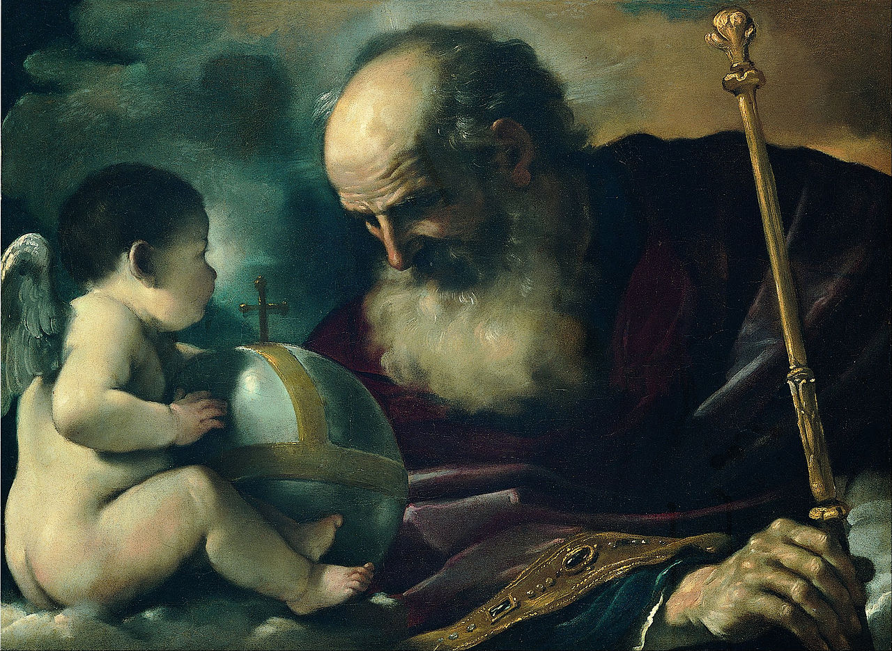
Seht, wie groß die Liebe des Vaters ist!
Aus den Offenbarungen des Himmlischen Vaters an Mutter Eugenia E. Ravasio
Gott schaut dich, wer immer du seist, so, wie du bist, persönlich. Er „ruft dich bei deinem Namen“. Er sieht dich und versteht dich, wie Er dich schuf. Er weiß, was in dir ist, all dein Fühlen, Denken, deine Anlagen und deine Wünsche, deine Stärke und deine Schwäche. Er sieht dich an deinem Tag der Freude und an deinem Tag der Trauer. Er fühlt mit deinen Hoffnungen und Prüfungen: Er nimmt Anteil an deinen Ängsten und Erinnerungen, an allem Aufstieg und Abfall deines Geistes. Er umfängt dich von allen Seiten und trägt dich auf Seinen Armen. Er liest in deinen Zügen, ob sie lächeln oder Tränen tragen, ob sie blühen an Gesundheit oder welken in Krankheit. Er schaut zärtlich auf deine Hände und deine Füße. Er horcht auf deine Stimme, das Klopfen deines Herzens, selbst auf deinen Atem. Du liebst dich nicht mehr als Er dich liebt. Hl. John Henry Newman
Diese Broschüre der Marianischen Priester- und Laienbewegung versammelt die Offenbarungen des Himmlischen Vaters an Mutter Eugenia Elisabetta Ravasio (1907–1990): Seine große Sehnsucht, von allen Menschen als liebender Vater erkannt, verehrt und geliebt zu werden, dazu Zeugnisse der kirchlichen Prüfung dieser Botschaft sowie Gebete und eine Vaterunser-Novene zum Himmlischen Vater.
Inhalt
- Auf dem Weg zum Herzen des Vaters
- Die Praxis des Himmlischen Vaters
- Das Bäumchen des Himmlischen Vaters
- Der Vater spricht zu Seinen Kindern
- Der Vater der Familien
- Herr, zeige uns den Vater!
- Maria, die Königin der Einheit
- Die Vaterschaft des hl. Josef
- Gebet und Lobpreis
- Dankt dem Vater mit Freude!
- Gebete zum Himmlischen Vater
Auf dem Weg zum Herzen des Vaters
Ob es uns bewusst ist, oder nicht, wir alle sind auf dem Weg zum Herzen des Vaters. Und der hl. Augustinus spricht uns aus der Seele, wenn er auf seinem Bekehrungsweg betet: Unruhig ist unser Herz, bis es ruht in Dir, o Gott!
Wenn wir die bunten und vielgestaltigen Lebensgeschichten der Heiligen betrachten, dann begegnen wir solchen, die schon von Kindesbeinen an am Herzen des Himmlischen Vaters ihren Platz gefunden haben, und andere wiederum, die erst nach vielen Irr- oder Umwegen, wie z. B. der hl. Paulus, das liebende Vaterherz und den wahren Glauben entdeckt haben. Und so manches Menschenkind, das über diese von Disteln und Dornen übersäte Erde wandelt, findet erst in seiner letzten Lebensstunde heim zum rettenden Anker des göttlichen Vaterherzens.
Nun stellt sich die entscheidende Frage: Wie finden wir den Weg zum Herzen des Vaters, oder vielmehr, wie findet der Vater den Weg in unser Herz?
Hierzu gibt uns Jesus im Evangelium eine ganz klare und für jedes Kind verständliche Antwort: Niemand kommt zum Vater außer durch Mich! (Joh 14,6)
Und weiter erklärt der Heiland: Wenn jemand Mich liebt, wird er Mein Wort halten, und er wird von Meinem Vater geliebt und Wir werden zu ihm kommen und Wohnung bei ihm nehmen. (Joh 14,23)
Damit will uns Jesus sagen, dass Gott Sich selbst auf den Weg zu uns macht, wenn wir uns nur von ganzem Herzen nach Ihm sehnen, Ihn lieben und unseren Willen mit dem Seinigen verbinden.
So bauen wir Ihm gleichsam eine goldene Himmelsleiter, durch die Er in unser armseliges Menschenherz herabsteigen kann, um sich dort den Thron Seiner Herrlichkeit zu errichten.
Denn die Herrlichkeit Gottes ist der lebendige Mensch, sagt der hl. Irenäus.
Das schönste Vorbild auf diesem Weg der Vereinigung mit Gott, ist uns die allerseligste Jungfrau Maria, die durch ihre große Liebe und Sehnsucht den Erlöser in ihren jungfräulichen Schoß herabgezogen hat.
Gleichzeitig ist die Gottesmutter aber auch die große Gnadenvermittlerin, die uns zu ihrem geliebten Sohn führt. Denn durch Maria gelangen wir zu Jesus und durch Jesus, der sich für uns zur Brücke gemacht hat, zum Himmlischen Vater.1
1 Da die Welt durch die Sünde Dornen und Leid hervorgebracht hat und dieser Fluss dahinströmt wie ein stürmisches Meer, habe Ich euch die Brücke gegeben, damit ihr nicht ertrinkt. (…) Doch dass sich Mein Sohn für euch zur Brücke gemacht hat, reicht nicht aus, um das Leben zu erlangen – ihr müsst diesem Weg über die Brücke auch folgen. (Aus: Der Dialog, Caterina von Siena, Ein Gespräch mit Gott über Seine Vorsehung, Kleinhain 2017, S. 52–53, 100)
O Immaculata, wann endlich wirst Du in den Herzen aller und jedes einzelnen herrschen? Wann endlich werden alle Bewohner der Erde Dich als Mutter und den Himmlischen Vater als Vater anerkennen? Hl. Maximilian M. Kolbe
Jungfrau mit der Sternenkrone,
reinste Jungfrau sei gegrüßt.
Blick herab vom Gnadenthrone,
da, wo unsre Träne fließt.
Blick herab aus Deiner Freude,
wo Du unter Engeln gehst
und mit unbeflecktem Kleide,
an des Vaters Throne stehst.
Bitte dort für Deine Kinder,
an des Vaters Gnadenthron,
und versöhn uns arme Sünder,
dort mit Jesus Deinem Sohn.
Rein zu sein und rein zu leben,
gib uns, Reinste, Deinen Sinn.
Nach der Tugend hilf uns streben,
führe uns zum Himmel hin.
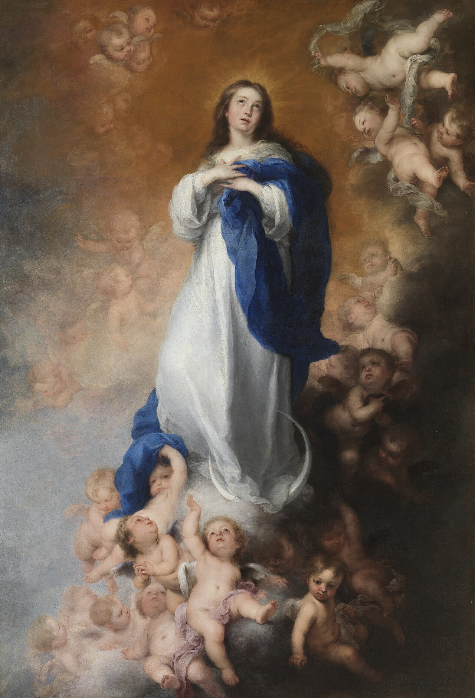
Die Praxis des Himmlischen Vaters
Als in einer Schulklasse die Frage gestellt wurde: Wo wohnt der liebe Gott?, da meldete sich ein kleines Mädchen, die Tochter eines Arztes, und erklärte ganz beherzt, an ihren eigenen Papa denkend: Der liebe Gott, unser Himmlischer Vater, wohnt im Himmel, aber Seine Praxis hat Er auf Erden. Dieses kleine Mädchen hat wahrlich den Nagel auf den Kopf getroffen, denn seit dem Sündenfall hat sich unsere Erde in ein riesiges Krankenhaus verwandelt.
Wie tröstlich ist es zu wissen, dass unter all den von der Erbsünde angesteckten „Patienten“ der göttliche Arzt selbst lebt und wirkt, um Seine schwer verwundeten Kinder mit den auserwähltesten und teuersten „Behandlungen“ für das Ewige Leben zu heilen und heimzuholen. Mit allem, was uns dieses irdische Leben an Schönem und Freudigem schenkt, aber auch mit Schwerem prüft, wendet der göttliche Primar Seine speziellen Therapien an, reicht uns durch Seine gütige Vorsehung, die uns in jedem Augenblick liebend umfängt, die besten Heils- und Heiligungsmittel für Leib und Seele.
Die wichtigste Einrichtung im großen Krankenhaus dieser Welt, ist die heilige katholische Kirche, die unser Herr Jesus Christus selbst gestiftet und der Er all Seine Erlöserverdienste anvertraut hat.
Sie ist wie ein neuer Garten Eden, in dem sich die sprudelnde Quelle der heiligen Sakramente in einem siebenfachen Gnadenstrom über die ganze Welt ergießt. Jene, die aus dieser göttlichen Quelle eifrig schöpfen, empfangen reichliche Gnaden, um die Herausforderungen des täglichen Lebens gut zu bestehen und auch die Anfechtungen des Teufels, dessen unbändiger Hass und Neid die Liebe zwischen Gott und dem Menschen nicht ertragen kann, siegreich zu überwinden.2
Mit zärtlicher Hirtensorge sprach Gottvater einst zur hl. Caterina von Siena:
Bleibt wie Schäfchen im Garten der heiligen Kirche, weidet hier und bringt Mir ein heiliges Verlangen und ständiges Gebet für sie dar, da Ich Mich der ganzen Welt erbarmen will. Entfernt euch nicht von dieser Weide, weder aufgrund irgendeines Unrechts, das euch geschehen, noch weil es euch wohl ergeht, denn Ich will nicht, dass ihr euer Haupt erhebt, weder in Ungeduld noch in ungeordneter Freude. Müht euch vielmehr demütig um Meine Ehre, um das Heil der Seelen und um die Erneuerung der heiligen Kirche. Das wird Mir ein Zeichen sein, dass ihr, du und die anderen, Mich in Wahrheit liebt.3 Der Himmlische Vater zur hl. Caterina von Siena
2 Vgl. 1 Petr 5,8-9.
3 Der Dialog, S. 359.
Gott will die Seelen zur Heiligkeit führen. Aus diesem Grund lässt Er die menschliche Gesellschaft bestehen, trotz des Wurmes, der an ihr nagt durch so viele Seelen, die Seinen Namen lästern und Seine Gebote missachten. In Seiner gütigen Vorsehung lenkt Er für alle, die Ihn lieben und Ihm vertrauen, selbst das Böse, das in der Welt geschieht, zum Guten. In der ganzen Welt lässt Er kein Ereignis zu und duldet Er kein Übel, ohne dass dadurch zum Fortschritt der Seelen beigetragen werde.
Gott sorgt für Seine herrlich gebaute Welt und ohne Mühe kann Er tausend andere, mächtigere und schönere bauen. Doch was Seine Gedanken viel mehr beschäftigt, Sein Herz vor allem berührt und den Himmel freudig bewegt, das sind die Seelen, das ist die bewahrte oder wiedererlangte Unschuld, ein Akt der Liebe, der Entschluss einer Seele, sich dem Herrn ganz zu schenken, ein Seufzer der Sehnsucht nach Seinem Herzen, ein Gebet. Wenn diese Sehnsucht des Himmlischen Vaters in unserem Herzen eine liebende Antwort findet und der Durst nach Seiner Ehre und der Rettung der Seelen unserem Leben immer mehr Sinn und Ziel verleiht, dann haben wir den schönsten und tiefsten Grund zur wahren Freude. Denn durch diese Gesinnung wandeln wir gleichsam in den Spuren Jesu, für den die Ehre des Vaters und das Heil der Seelen der Pulsschlag Seines ganzen gottmenschlichen Lebens waren.4
Und ihr, die ihr zu Meiner Ehre arbeiten und euch darum bemühen werdet, dass Ich erkannt, verehrt und geliebt werde, Ich versichere euch, dass euer Lohn groß sein wird, denn Ich würdige alles, auch euren kleinsten Einsatz, und Ich vergelte es euch hundertfach in der Ewigkeit. Worte des Göttlichen Vaters an Mutter Eugenia
4 Vgl. Joh 4,32-34: Meine Speise ist es, den Willen dessen zu erfüllen, der Mich gesandt hat. Der Wille des Vaters aber ist das Heil der Menschen, die Rettung der Welt. An dieser Heilssorge mitzuwirken durch Gebet und Opfer nennt die hl. Caterina von Siena Seelen essen oder Seelen verspeisen … Das heißt, dass die Sorge um das Heil des Nächsten zugleich der eigenen Seele zu Gute kommt und sie nährt, weil dieses Sorgen zutiefst dem göttlichen Willen des Vaters entspricht. (Ebd. S. 171)
Das Bäumchen des Himmlischen Vaters
Um uns wieder neu an die großen Heilswahrheiten des katholischen Glaubens zu erinnern, schenkte uns der Himmlische Vater im Jahre 1932 eine ganz besondere Botschaft durch Mutter Eugenia Elisabetta Ravasio, (1907–1990) der Er Seine große Sehnsucht mitteilte, von allen Menschen erkannt, verehrt und geliebt zu werden.
Doch wer war Mutter Eugenia, die der Himmlische Vater liebevoll „Meine bevorzugte Tochter, Mein Bäumchen“ zu nennen pflegte?
Die aus Norditalien stammende Mutter Eugenia war Missionsschwester in der Kongregation Unserer Lieben Frau von den Aposteln und lebte in heroischer Hingabe für die Einheit aller Menschen als Kinder Gottes in Christus und zur Ehre des Himmlischen Vaters.
In dieser Intention gründete sie in Rom die „Unitas in Christo ad Patrem“, die bis heute ihr Charisma weiterträgt.
Als Generaloberin eröffnete sie zahlreiche Noviziate, Zentren mit Kapelle, Schulen und Krankenabteilungen in Europa. Sie entdeckte das erste Medikament gegen Lepra und verwirklichte die Idee einer Stadt für Leprakranke, die sie zwischen 1938–1941 in Azopté (Elfenbeinküste) errichten ließ.
Am 1. Juli und am 12. August 1932 empfing sie die Botschaft des Vaters, der ihr in sichtbarer Gestalt erschien, um ihr die Mission anzuvertrauen, die Menschen vorzubereiten, den Vater, der in ihnen und mit ihnen Sein Reich der Liebe begründen will, in ihr Herz aufzunehmen.
Das Weizenkorn, das in die Erde fällt
Im Jahr 1947 wurde Mutter Eugenia mit einer Ausnahmegenehmigung aufgrund ihrer außerordentlichen Liebe und unglaublichen Führungsgabe für eine dritte Amtszeit zur Generaloberin gewählt. Doch Gott ließ es zu, dass eine Schwester aus den eigenen Reihen sie beim heiligen Offizium anklagte und verleumdete. Daraufhin musste die begnadete Oberin ihr Amt niederlegen. Man verbot ihr, über die Botschaft zu sprechen, und aus allen Missionshäusern mussten die Bilder des Göttlichen Vaters entfernt werden. Innerlich erkannte Mutter Eugenia, dass man auch bald von ihr verlangen würde, ihr Institut zu verlassen, was nach einer langen Reihe von Verleumdungen und Anklagen 1956 tatsächlich eintraf. Gleichzeitig gab Gott ihr aber auch zu verstehen, dass sie eine neue Kongregation gründen würde. In den folgenden Jahren rang Mutter Eugenia um Klarheit, wie sie diesen Auftrag erfüllen sollte. Es waren mehrere Jahre innerer Dunkelheit und vieler äußerer Leiden. Erst 1980 erhielt sie die kirchliche Erlaubnis, die Missionarinnen „Unitas in Christo ad Patrem“ zu gründen. Und 1989 gab der Generalvikar des Vatikanstaates, Petrus Canisius van Lierde OSB, das Imprimatur für die Botschaft.
Mutter Eugenia hatte Gott alles gegeben, und so gab auch Er ihr alles, worum sie Ihn bat. Deshalb wandten sich viele im Vertrauen auf ihre Fürbittmacht an sie. So kam eines Tages auch ein gelähmtes Mädchen zu ihr. Mutter Eugenia versprach ihr: Sei beruhigt, ich nehme dein Leiden auf mich. Du bist noch jung und musst noch viel Gutes tun. Kurze Zeit später wurden mehrere Personen Zeugen, wie sich die Kranke aufrichtete und ohne jegliche Hilfe gehen konnte. Mutter Eugenia hingegen verbrachte die letzten Jahre ihres Lebens im Rollstuhl. So gab sie ihr Leben als Sühnopfer vorbehaltlos in die Hände des Vaters, damit sich möglichst bald verwirklichen könne, was Er sie bereits 1947 erkennen ließ:
Eines Tages wird das Samenkorn aufgehen und seine Frucht auf der ganzen Welt und in jedem Herzen aufstrahlen. Und alle, vom Heiligen Vater bis zum letzten Gläubigen, werden vom Göttlichen Vater sprechen, der das Alpha und Omega unseres Lebens und unserer Einheit in uns selbst, in der Familie und in der Kirche ist und für immer sein wird. Der Himmlische Vater an Mutter Eugenia, 1947
Am 10. August 1990 starb die Prophetin des Göttlichen Vaters mit 83 Jahren im Rufe der Heiligkeit.
Ich muss das Lächeln des Vaters sein. Die Tränen, die etwas wert sind, sind nicht jene, die hinunterfallen, sondern diejenigen, die emporsteigen.5 Mutter Eugenia E. Ravasio
5 Mutter Eugenia spricht hier über den in Liebe aufgeopferten Schmerz, der überreiche Früchte bringt, wenn er mit den Leiden des Erlösers vereint wird.
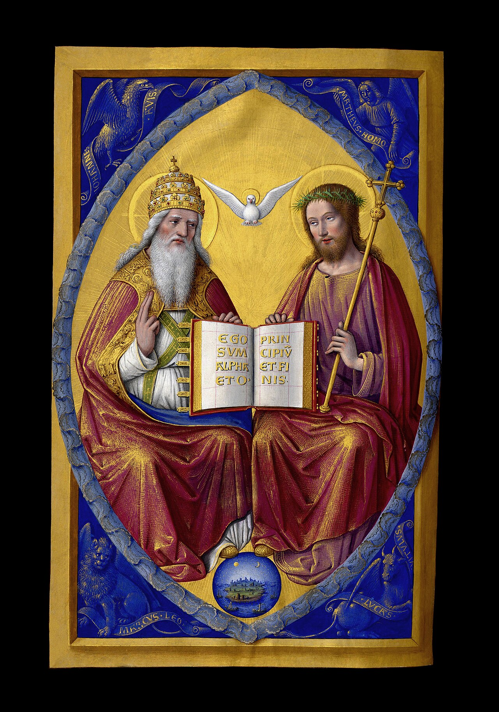
Die kirchliche Prüfung
Als Papst Pius XII. von Mutter Eugenia hörte, sandte er P. Girard Matthieu, einen Priester seines Vertrauens, zu ihr, um Informationen aus erster Hand zu erhalten. Während der Pater auf Mutter Eugenia wartete, sah er sie vom Ende des Korridors auf sich zukommen: einen halben Meter über dem Boden schwebend und von einem strahlenden Licht umgeben, das von ihr ausging. Dieses Wunder wirkte Gott als Echtheitsbeweis für Seine Offenbarungen an diese auserwählte Seele.
Nach einer zehnjährigen Prüfungszeit unter der Leitung von Bischof Alexandre Caillot, (1861–1957) wurde die Botschaft des Himmlischen Vaters, die Mutter Eugenia in lateinischer Sprache empfing, für authentisch erklärt.6
6 Dieser überaus erfahrene und eifrige Seelenhirte hatte eigens eine Kommission zur Untersuchung der Botschaft und ihrer Empfängerin eingesetzt. Zehn Jahre lang arbeiteten mehrere Theologen an diesem Auftrag, wobei es nicht nur um den Inhalt der Botschaft ging, sondern vor allem auch um die Tatsache, dass Sich der Göttliche Vater Mutter Eugenia sichtbar als Person zeigte. Im Januar 1934 entdeckten die Theologen bei Thomas von Aquin die Antwort auf ihre eigenen Einwände. Die Antwort des großen Kirchenlehrers auf die Unterscheidung von „Erscheinung“ und „Mission“ war einleuchtend. Sie überwand die Hürde, die die gesamte Untersuchung lähmte. Die Tatsache, dass der Göttliche Vater die Botschaft in lateinischer Sprache gab, Mutter Eugenia aber aufgrund ihrer nur dreijährigen Schulbildung kein Latein sprach, war ein weiterer starker Echtheitsbeweis für Bischof Alexandre Caillot.
Nach bestem Wissen und Gewissen und im vollen Bewusstsein meiner Verantwortung vor der Kirche erkläre ich: Nur ein übernatürliches und göttliches Eingreifen, scheint mir, vermag die Gesamtheit der Fakten logisch und zufriedenstellend zu erklären. Ungeachtet aller übrigen Umstände scheint mir diese wesentliche Tatsache voller Adel, Erhabenheit und übernatürlicher Fruchtbarkeit. Eine demütige Ordensfrau hat die Seelen an die wahre Religion erinnert, so wie Jesus es lehrte und wie die Kirche es in ihrer Liturgie festgelegt hat. (…) Ich glaube, dass hier die Hand Gottes am Werk ist, und nach zehn Jahren der Nachforschungen, des Nachdenkens und des Gebetes lobpreise ich den Vater, der Sich gewürdigt hat, meine Diözese als Ort solch ergreifender Bekundung Seiner Liebe auszuerwählen. + Alexandre Caillot, Bischof von Grenoble
Ich preise Dich, Vater, Herr des Himmels und der Erde, weil Du all das den Weisen und Klugen verborgen, den Unmündigen aber offenbart hast. Mt 11,25
Der Vater spricht zu Seinen Kindern
Der Grund Seines Kommens
- Ich lege Meine Krone und Meine ganze Herrlichkeit ab, um die demütige Haltung eines gewöhnlichen Menschen anzunehmen!
- Ich komme, um die übermäßige Furcht, die Meine Geschöpfe vor mir haben, endgültig zu vertreiben. Ich möchte ihnen zu verstehen geben, dass es Meine Freude ist, von Meinen Söhnen und Töchtern, das heißt, von der ganzen gegenwärtigen und zukünftigen Menschheit erkannt und geliebt zu werden.
- Meine Anwesenheit unter euch ist wie die Sonne auf der irdischen Welt. Wenn ihr bereit seid, Mich aufzunehmen, werde Ich euch sehr nahe kommen. Ich werde Wohnung in Euch nehmen, euch erleuchten und durch Meine unendliche Liebe erwärmen.
- O, wie wurde Meine Vaterliebe von den Menschen vergessen! Und doch liebe Ich euch mit so großer Zärtlichkeit.
- Wenn ihr Mich liebt und Mich vertrauensvoll bei diesem liebenswerten Namen Vater nennt, beginnt ihr schon hier auf Erden, jene Liebe und jenes Vertrauen zu leben, die in der Ewigkeit euer ganzes Glück ausmachen werden.
Ich habe euch lieb, spricht der Herr. Mal 1,1
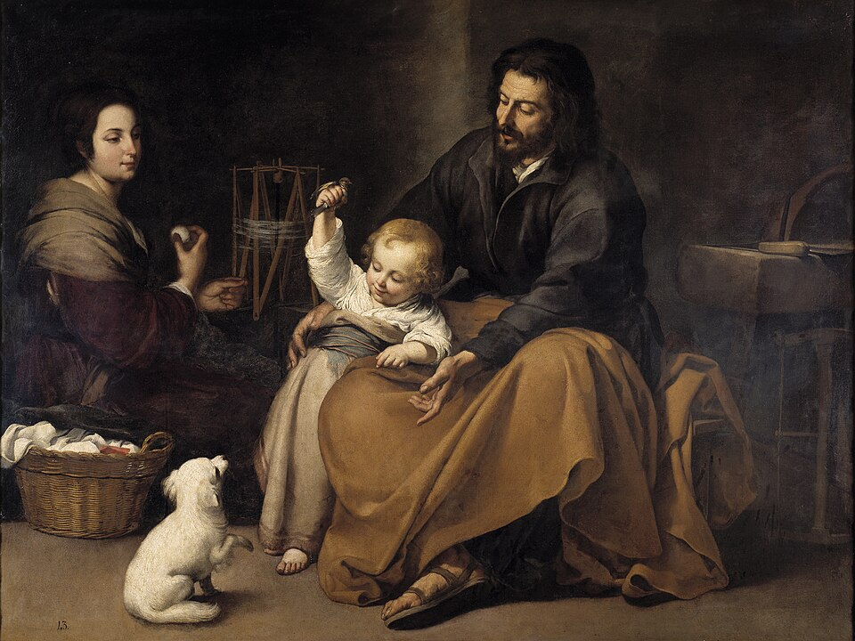
Die Heilige Familie mit dem Lamm (Gemälde von Raffael)
Der Vater der Familien
- Wenn Mich die Familien ehren und als ihren Vater lieben, werde Ich ihnen Frieden senden und mit ihm meine Vorsorge.
- Wie groß wäre meine Freude, wenn Ich sehen würde, wie Eltern ihren Kindern beibringen, Mich oft bei Meinem Namen zu nennen, Mich Vater zu rufen, denn das bin Ich in Wirklichkeit. Wie sehr sehne Ich Mich danach zu erleben, dass in diesen jungen Seelen Vertrauen und Liebe zu Mir entsteht, die Liebe der Kinder zum Vater! Ich habe alles für euch getan, werdet ihr das nun für Mich tun?
- Ich möchte in jeder Familie verweilen, wie in Meinem Haus, damit alle mit größter Sicherheit sagen können: Wir haben einen Vater, der unendlich gut, unendlich reich und unvorstellbar barmherzig ist. Er denkt an uns und ist uns nah, Er wacht über uns, Er selbst beschützt uns, und wird uns alles geben, was uns fehlt, wenn wir Ihn darum bitten. All Seine Reichtümer gehören uns, wir werden alles haben, was wir brauchen.
Seht, wie groß die Liebe ist, die der Vater uns geschenkt hat: Wir heißen Kinder Gottes und wir sind es. 1 Joh 3,1
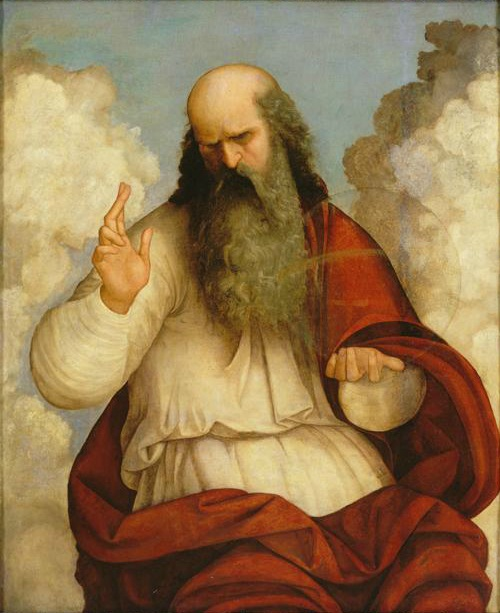
Der Himmlische Vater (Gemälde)
Der Vater aller Menschen
- Wenn Mich jemand liebt und sich Mir anvertraut, werde Ich ihm bei all seinen Nöten, all seinen Verwirrungen und Leiden und bei jeglichem Kummer einen Strahl des Friedens senden, vor allem wenn er Mich anruft und Mich als seinen Vater liebt.
- Wenn Mich die Arbeiter, die Industriellen und die verschiedenen anderen Handwerker anrufen und ehren, werde Ich ihnen Meinen Frieden und Meine Kraft schenken und Mich ihnen als guter und barmherziger Vater zeigen.
Die größte gute Meinung
Himmlischer Vater, ich opfere Dir alles, was immer ich tun, opfern und leiden werde, vereint mit den Verdiensten Jesu und Mariens auf, im Namen aller Seelen und für alle Seelen der ganzen hl. Kirche, mit dem Willen, dadurch zu wirken und fortzuwirken in Ewigkeit. Amen.7
7 Wenn du diese Worte betest, erweckst du auf die vollkommenste Art die gute Meinung. Auch nehmen die Menschen, die so beten, an der Gemeinschaft der Heiligen teil oder vielmehr, sie treten jedes Mal, wenn sie diese Worte gebrauchen, gleichsam aufs neue noch enger, in die Gemeinschaft der Heiligen ein, nicht bloß der Heiligen des Himmels, sondern aller Glieder der dreifachen Kirche. Darum vermag niemand auf eine vorzüglichere Art den neuen Tag mit Gott anzufangen. (Aus: Aszese und Mystik, von Prof. Albert Drexel, Jestetten 1977)
- Wenn Ich in jeder christlichen Gemeinschaft angerufen und geehrt werde, werde Ich Meinen Frieden spenden und Mich als der liebevollste Vater zeigen und dank Meiner Macht werde Ich den Seelen ewiges Heil zusichern.
- Wenn Mich die gesamte Menschheit anruft und ehrt, werde Ich ihr den Geist des Friedens senden, der sich wie gesegneter Tau auf sie niederlassen wird.

Rückkehr des verlorenen Sohnes zum barmherzigen Vater
Der Barmherzige Vater
- Wenn Mich alle Nationen ebenso anrufen und ehren, wird es keine Zwietracht und auch keine Kriege mehr geben, denn Ich bin der Gott des Friedens und dort, wo Ich bin, wird kein Krieg sein.
Wohl denen, die Dich lieben; sie werden sich freuen über den Frieden, den Du schenkst. Tob 13,15
- Nähert euch Meiner Quelle, die immer aus Meinen väterlichen Herztiefen entspringt (…) und stürzt euch in den Ozean Meiner Liebe, um nur noch in Mir zu leben. Wenn ihr an dieser Quelle trinken wollt, dann ergründet Mich, lernt, damit ihr Mich kennenlernt und sobald ihr Mich kennt, stürzt euch in den Ozean Meiner Liebe, indem ihr euch Mir anvertraut mit einem Vertrauen, das euch verwandelt und dem Ich nicht widerstehen kann, sodass Ich euch eure Fehler verzeihen und euch mit den größten Gnaden erfüllen werde.8
8 Mutter Eugenia vermerkt hierzu: Unser Vater hat mir in einem vertraulichen Gespräch gesagt: „Die Quelle steht als Symbol für Mein Erkanntwerden, und der Ozean steht für Meine Liebe und euer Vertrauen.“
Ich bin gekommen, um euch die wahre Freiheit kosten zu lassen, die Freiheit, aus der wahre Glückseligkeit entspringt: Alle Freuden dieser Erde sind nichts im Vergleich zu diesem Glück.
Ihr, Meine Kinder, die ihr euch außerhalb der katholischen Kirche befindet, ihr sollt wissen, dass euch Meine väterliche Liebe nicht ausschließt. Ich wende mich an euch mit Meinem zärtlichen Ruf, denn auch ihr seid Meine Kinder. Wenn ihr auch bis heute den Reizen erlegen seid, mit denen euch der Teufel lockte, so erkennt, dass er euch betrogen hat; kommt zu Mir, eurem Vater, und Ich werde euch mit Freude und Liebe aufnehmen!
Und ihr, Meine Kinder, die ihr in der Finsternis lebt, weil ihr euren Glauben verloren habt. Erhebt euren Blick und ihr werdet helle Strahlen sehen, die euch erleuchten. Ich bin die Sonne, die auf euch scheint, die warm ist und euch erwärmt. Seht und ihr werdet erkennen, dass Ich euer Schöpfer bin, euer Vater, euer einziger Gott.
Kommt, kommt mit Vertrauen zu Mir. (…) Eure Sünden sind für Mich wie Eisen, eure Taten aus Liebe wie Gold. (…) Das bedeutet, dass mit ein wenig Liebe unendlich große Freveltaten aufgehoben werden.
Allen, die mich von Herzen mit dem Namen Vater nennen und sei es nur ein einziges Mal, werden nicht verloren gehen; nein, ihnen ist das ewige Leben in der Gemeinschaft der Auserwählten zugesichert.
Herr, mein Vater bist Du, mein Gott, mein rettender Held. Jesus Sirach 51,10
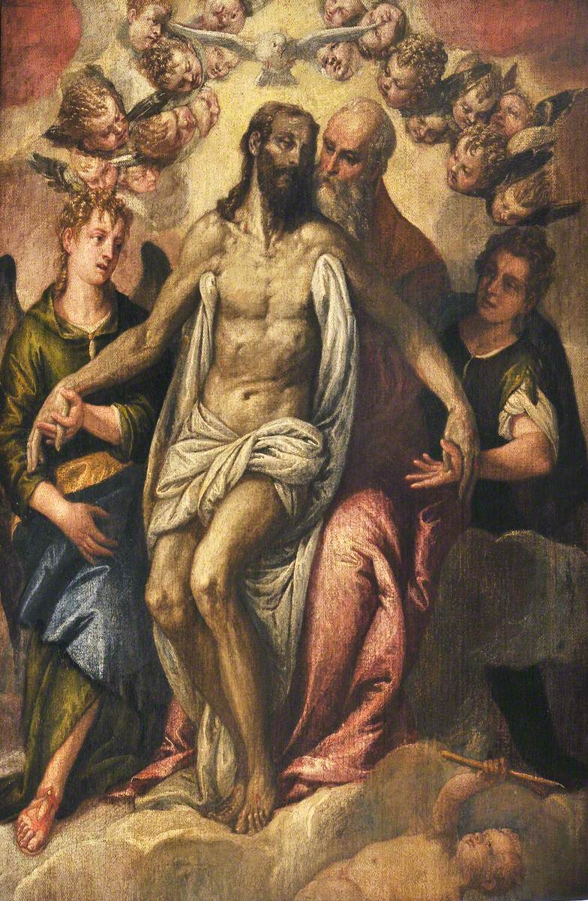
Der Vater nimmt Seinen geopferten Sohn in Seine Arme (Gnadenstuhl)
Die Wege des Vaters
Ich komme auf zwei Wegen zu euch: Durch das Kreuz und die Eucharistie.
Das Kreuz ist mein Weg, um zu Meinen Kindern hinabzusteigen, denn durch das Kreuz habe Ich euch durch Meinen Sohn erlöst. Für euch ist das Kreuz der Weg, um zu Meinem Sohn emporzusteigen, und durch Meinen Sohn zu Mir. (…)
In der Eucharistie verweile Ich unter euch wie ein Vater in seiner Familie. Ich wollte, dass Mein Sohn die Eucharistie einsetze, um aus jedem Tabernakel ein Gefäß Meiner Gnaden, Meiner Reichtümer und Meiner Liebe zu machen, damit ich sie an die Menschen, Meine Kinder, austeilen kann.
Durch diese beiden Wege lasse Ich unaufhörlich Meine Kraft und Meine unendliche Barmherzigkeit zu den Menschen fließen.
Ich kann die Schwäche Meiner Kinder verstehen. Deshalb bat Ich Meinen Sohn, ihnen Mittel zu schenken, um sich nach ihren Sündenfällen wieder zu erheben. Diese Mittel werden ihnen helfen, sich von der Sünde zu reinigen, sodass sie wieder Kinder Meiner Liebe werden. Diese Mittel sind hauptsächlich die sieben Sakramente und ein sehr bedeutendes, wichtiges Mittel ist vor allem das Kreuz, denn es wird euch trotz eurer Sündenfälle retten, es ist das Blut Meines Sohnes, das sich jeden Augenblick über euch ergießt, vorausgesetzt, ihr nehmt es an und zwar sowohl durch das Sakrament der Buße, als auch durch das Heilige Opfer der Messe.9
9 Die Feier der Hl. Messe ist Quelle und Höhepunkt des ganzen christlichen Lebens, der höchste Gottesdienst, die geheimnisvolle Vergegenwärtigung des Kreuzesopfers Jesu Christi. In der gehorsamen Hingabe Jesu wird dem Vater alle Herrlichkeit und Ehre zuteil. Zugleich öffnet Christi Liebe jedem Menschen einen Weg, der hinführt zum Herzen des Vaters. Unser ganzes Sein, unsere menschliche Schwäche, unsere Sorgen und Nöte sowie die Schuld aller Menschen legen wir hinein in das Wandlungsgeschehen der Heiligen Messe. Denn im gebrochenen Leib und im vergossenen Blut Christi finden wir Heilung und Sühne für die Sünden der ganzen Welt. Der begnadete Steyler Missionar Bruder Kostka Wasel (1868–1946) durfte über 40 Jahre in Schauungen das Mysterium des Hl. Messopfers miterleben. Besonders ergreifend schildert er, wie im Augenblick der Wandlung der Himmlische Vater Seinen geopferten Sohn in Seine Arme nimmt. In Seinem vielgeliebten Sohn schließt der Vater aber auch uns, Seine Kinder, in Seine Arme und wir dürfen sicher sein, dass dies der größte und erhabenste Moment ist, von unserem Himmlischen Vater jegliche Gnade und die tiefe persönliche Heilung all unserer Wunden zu erbitten, denn nun steht der Gnadenthron allen offen, die mit Vertrauen Hilfe erflehen. (Vgl. Das heilige Messopfer in Schauungen erlebt, hrsg. von Klemens Kiser, Lauerz 1996, S. 69–128)
Meine Kinder, Ich werde nicht die ganze Größe Meiner unendlichen Liebe aussprechen, denn es genügt euch, die Heilige Schrift zu öffnen sowie das Kreuz, den Tabernakel und das Allerheiligste Altarsakrament zu betrachten, damit ihr verstehen könnt, bis zu welchem Punkt Ich euch geliebt habe!
Empfangt den Leib und trinkt das Blut Jesu Christi, der durch die undankbaren Menschen so furchtbar beleidigt wird. Sühnt ihre Sünden und tröstet euren Gott. Worte des Engels an die Fatimakinder 1916
Wie schön ist es, wie groß ist es, Gott zu kennen, Ihn zu lieben, Ihm zu dienen! Nichts weiter als das haben wir zu tun in dieser Welt. Alles, was wir sonst noch tun, ist verlorene Zeit. Hl. Johannes Maria Vianney
So sehr hat Gott die Welt geliebt, dass Er Seinen eingeborenen Sohn dahingab, damit jeder, der an Ihn glaubt, nicht verloren gehe, sondern das ewige Leben habe. Joh 3,16
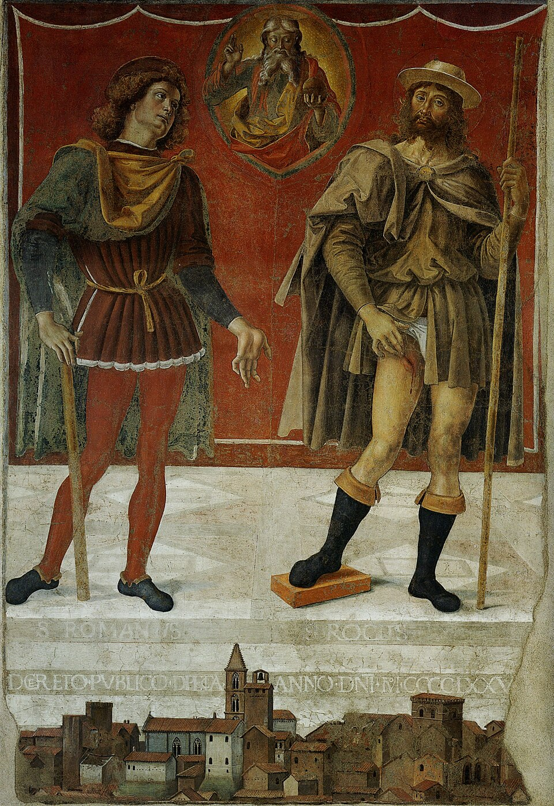
Der Himmlische Vater, umgeben von Heiligen (Fresko von Perugino)
Ein Fest für den Himmlischen Vater
Ein Tag, oder wenigstens ein Sonntag soll Mir geweiht sein, an dem ich in ganz besonderer Weise unter dem Namen Vater der ganzen Menschheit geehrt werde.10 Für dieses Fest wünsche ich ein eigenes Messformular und ein eigenes Proprium für das Stundengebet. Es ist nicht schwer, die Texte dafür in der Hl. Schrift zu finden. Wenn ihr es vorzieht, Mir diese besondere Verehrung an einem Sonntag zu erweisen, wähle Ich den ersten Sonntag im August, wenn ihr einen Wochentag nehmt, bevorzuge Ich immer den 7. August.
10 Der Gegenstand des Auftrags, der Mutter Eugenia anvertraut worden ist, ist sehr präzise und vom doktrinären Gesichtspunkt gesehen auch, wie mir scheint, legitim und angebracht. Die genaue Mission ist: den Vater bekannt zu machen und zu ehren, vor allem die Forderung an die Kirche zur Einführung eines speziellen Festes. Die Untersuchung hat ergeben, dass ein liturgisches Fest zu Ehren des Vaters recht gut mit der gesamten Linie des katholischen Kultes vereinbar wäre und mit der traditionellen Bewegung des katholischen Gebetes, dem Aufsteigen zum Vater durch den Sohn im Heiligen Geist, übereinstimmt, wie es die Hochgebete der Hl. Messe und die liturgischen Darbringungen zum Vater im Heiligen Opfer beweisen. Andererseits ist es seltsam, dass es bisher noch kein spezielles Fest zur Ehre des Vaters gibt: die Dreifaltigkeit wird als solche geehrt, das Wort und der Heilige Geist werden in ihrer Mission und in ihren äußerlichen Offenbarungen geehrt, nur der Vater hat kein eigenes Fest, das die Aufmerksamkeit des christlichen Volkes in besonderer Weise auf Seine Person lenken würde. (Bischof Alexandre Caillot)
Der ganze Klerus soll sich dafür einsetzen, diese Verehrung zur Entfaltung zu bringen, vor allem sollen die Kleriker Mich den Menschen als den bekanntmachen, der Ich bin und der Ich immer für sie sein werde: Nämlich der zärtlichste und liebenswürdigste aller Väter.
Wenn all die Menschen, die unserer katholischen Kirche fern sind, von diesem Vater, der sie liebt und der ihr Schöpfer und Gott ist, hören würden, wenn ihr ihnen von diesem Vater, der ihnen das ewige Leben schenken möchte, erzählen würdet, dann käme ein großer Teil dieser Menschen zu diesem Vater, auch die Hartnäckigsten unter ihnen.
Er ist unser Vater in alle Ewigkeit. Tob 13,4
Das Bild des Himmlischen Vaters
Ich wünsche, dass der Klerus dafür sorgt, dass Mir in allen Familien und in den Krankenhäusern Einlass gewährt werde, auch in den Werkstätten und Fabriken, in den Kasernen und in den Sitzungssälen, in denen die Minister der Nationen ihre Beschlüsse fassen, ja schließlich überall dort, wo Meine Geschöpfe sich aufhalten, und wäre dort auch nur ein einziges von ihnen.
Das sichtbare Zeichen Meiner unsichtbaren Gegenwart soll ein Bild sein, das zeigt, dass ich wirklich da und anwesend bin. (…) Auf diese Weise werden alle Meine Kinder gleichsam unter dem Blick ihres zärtlichen Vaters leben. Zweifellos bin Ich auch jetzt überall, doch Ich möchte auf eine für die Sinne wahrnehmbare Weise dargestellt sein.
Ganz besonders wünsche Ich in den Priesterseminaren, den Noviziaten, in den Schulen und Heimen verehrt zu werden. Alle, von den Kleinsten bis zu den Größten, sollen Mich erkennen können und Mich lieben als ihren Vater, ihren Schöpfer und ihren Erlöser.11
11 Auszüge aus der Botschaft des Himmlischen Vaters an Mutter Eugenia E. Ravasio, Imprimatur: Petrus Canisius van Lierde, Vic. Generalis e Vic.Civit. Vaticanae, Roma, die 13 Martii 1989.
Mein Vater bist Du, mein Gott, der Fels meines Heiles. Ps 89,27
Herr, zeige uns den Vater!
Der hl. Hilarius von Poitiers sagt, dass es das große Werk Christi war, den Vater bekannt zu machen. In der Bergpredigt spricht Jesus 17 Mal vom Vater, im ganzen Matthäus Evangelium 47 Mal, bei Johannes 115 Mal, davon 43 Mal in den Abschiedsreden.
Im Dienst dieses großen Werkes Christi steht auch der Auftrag, den Mutter Eugenia vom Himmlischen Vater selbst empfangen hat: Den Menschen mitzuteilen, wie groß die Sehnsucht des Vaters ist, von allen Seinen Geschöpfen erkannt, geliebt und verehrt zu werden.
Jesus ist eines Wesens mit dem Vater, dessen Güte und Liebe Er auf die vollkommenste Weise widerspiegelt.
Wenn wir wissen wollen, ob sich unser Vaterbild in eine gute Richtung bewegt, so müssen wir uns nur fragen, ob wir im Leben und Handeln Jesu die barmherzige Liebe des Himmlischen Vaters erkennen?
Selbst die Jünger Jesu mussten sich Schritt für Schritt die Wahrheit über das Wesen des Vaters erobern, was sich nicht zuletzt in der sehnsüchtigen Bitte des hl. Apostels Philippus ausdrückt: Herr, zeige uns den Vater! Und Jesus antwortet ihm: Philippus, wer Mich gesehen hat, hat den Vater gesehen. (Joh 14,8-9)
Und als die Jünger ihren Meister beten sahen, da regte sich in ihnen der innige Wunsch, in gleicherweise zum Vater zu beten. Dieser Sehnsucht entstammt ihre Bitte: Herr, lehre uns beten! (Lk 11,1)
Und Jesus führt sie ein in das große Herrengebet, das bis zur heutigen Stunde aus den Herzen unzähliger Christen zum Herzen des Vaters emporsteigt.
In den Spuren der Apostel und der ersten Christen, die den Klang der Stimme Jesu hörten, Seinen Gesichtsausdruck und Seine Körperhaltung sehen durften, wenn Er das Vaterunser betete, dürfen wir wieder neu entdecken, welch einen zärtlichen, großen und über alles erhabenen Vater wir haben.
In diesem Sinne sagt der hl. Johannes Cassian († 435): Das Vaterunser ist ein Aufblick zu Gott allein, ein großes Feuer der Liebe. Die Seele schmilzt darin, versinkt in die hl. Liebe und unterhält sich mit Gott wie mit dem eigenen Vater, sehr vertraut, in ganz besonderer, zärtlicher Kindesliebe.
Als die kleine hl. Theresia vom Kinde Jesu eines Tages ganz gesammelt mit einer Näharbeit beschäftigt war, kam ihre Schwester Celine und fragte: Woran denken Sie? Und diese antwortete: Ich meditiere über das Vaterunser. Es ist so schön, den lieben Gott Vater zu nennen! Und in ihren Augen schimmerten Tränen.
Diese innige Beziehung der hl. Theresia zu ihrem Himmlischen Vater zeigt sich auch in einem Brief an ihre Schwester Agnes, der sie schreibt: Gott ist zärtlicher als eine Mutter!
Und in einem Brief an Mutter Marie de Gonzague schreibt sie: Manchmal, wenn mein Geist sich in so großer Trockenheit befindet, dass es mir unmöglich ist, einen Gedanken zu fassen, der mich dem Lieben Gott vereinte, bete ich sehr langsam ein Vaterunser und darauf den Englischen Gruß. Dann entzücken mich diese Gebete, sie nähren meine Seele weit mehr, als wenn ich sie hastig hundertmal hergesagt hätte.
Wir dürfen uns bewusst sein, dass wir uns im ehrfürchtigen Beten des Vaterunsers in die Arme des Himmlischen Vaters flüchten, der uns mit Seiner alles umfassenden väterlichen Liebe und Autorität vor den Angriffen des Bösen schützt, wie wir Ihn am Ende des Vaterunsers bitten: … erlöse uns von dem Bösen. Somit hat das kostbare Gebet des Herrn auch eine hervorragende exorzistische Wirkung, wie dies schon von vielen im Befreiungsdienst tätigen Priestern und zahlreichen Christen bestätigt wurde.12
12 Vgl. Maria, das Zeichen der Zeit, 3. Quartal 2023.
Und wenn wir nach dem Beten des Vaterunsers noch die Gottesmutter mit dem Ave Maria grüßen, dann setzen wir dieser gnadenvollen Wirkung gleichsam die Krone auf.
Wenn ihr betet, so sprecht: Vater, Dein Name werde geheiligt. Dein Reich komme. Lk 11,2
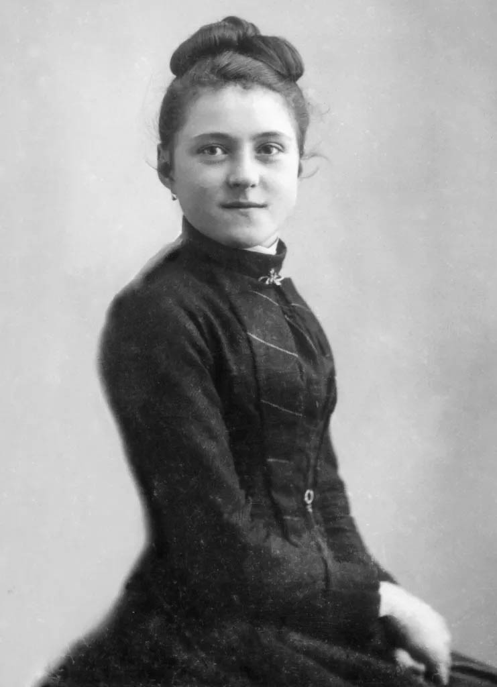
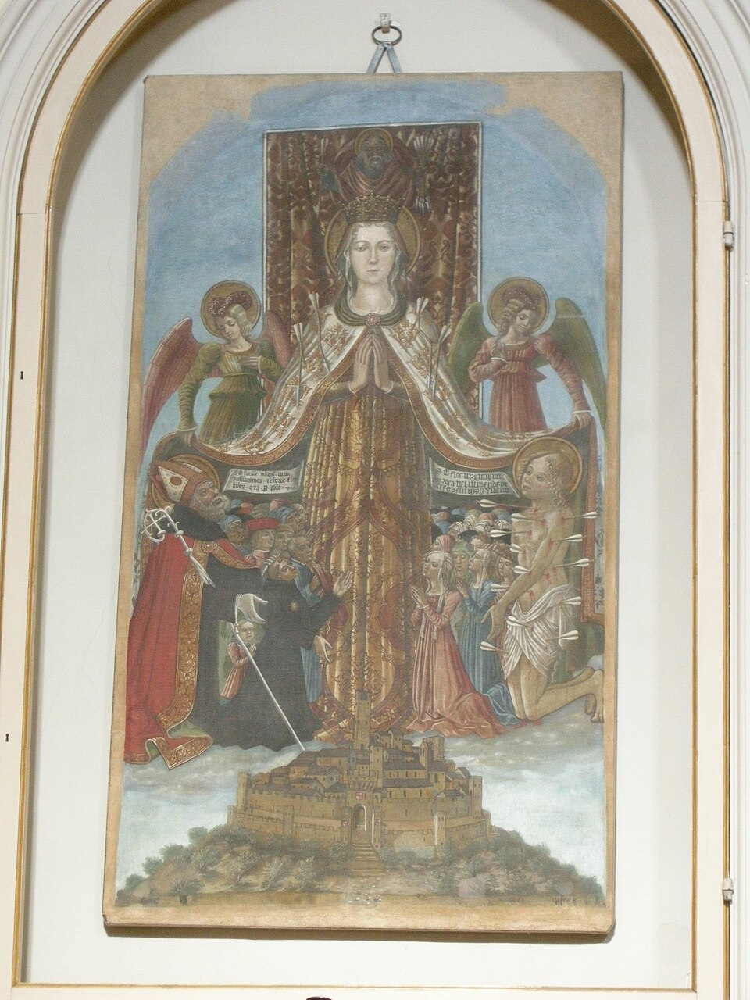
Maria, Schutzmantelmadonna (Madonna della Misericordia)
Maria, die Königin der Einheit
Zusammen mit Jesus hat Mutter Eugenia ihr Leben aufgeopfert für die Einheit der Söhne und Töchter im Hause des Vaters. Wie hätte sie dies besser tun können als mit Maria, der Königin der Einheit? Ihr Leben war geprägt von der Gegenwart dieser liebenwürdigen Mutter: sie war es, die ihr geholfen hatte, die ersten Schritte ihres Lebens zu tun. Im Wachsen merkte sie nach und nach, dass sie diese Hand immer mehr festhalten muss, um Hindernisse überwinden und sicher auf dem Weg des Heiligen Geistes gehen zu können. Eines Tages war es ihr, als würde sie diese Hand wieder so lebendig berühren, und sie fühlte sich in ein Licht hineingeführt, so unermesslich, wie sie es noch nie zuvor gesehen hatte und sie fand sich wie in einer neuen Welt: die himmlische Mutter führte sie ganz sanft und lehrte sie, den Vater, den Sohn und den Heiligen Geist zu erkennen. Unfassbares Geheimnis …!
Die heiligste Mutter sagte zu ihr: Siehst du, du gehörst zu unserer Familie. Mutter Eugenia wusste nicht mehr, ob sie im Himmel oder auf der Erde war. Diese Erkenntnis hat sich tief in ihre Seele eingeprägt. Jetzt wusste sie, wie man zu dieser Einheit gelangen konnte. Koste es, was es wolle:
Mutter Jesu und meine liebreichste Mutter, ich lege mein ganzes Leben in Deine Hände indem ich immer und in allem den Göttlichen Willen des Vaters anbete. Bringe es Jesus dar zur Verherrlichung des Vaters und in der Liebe des Heiligen Geistes, damit alle zum Hause des Vaters gelangen. Alle! Ich bin zu jedem Opfer bereit, damit niemand fehle. Hilf mir, meine Mutter, eins mit Jesus als wahres Kind des Vaters in vollkommener Hingabe an das Evangelium zu leben. Königin der Einheit, bitte für uns! Mutter Eugenia E. Ravasio
Heiliger Vater, bewahre sie in Deinem Namen, den Du Mir gegeben hast, damit sie eins seien wie Wir. Joh 17,11
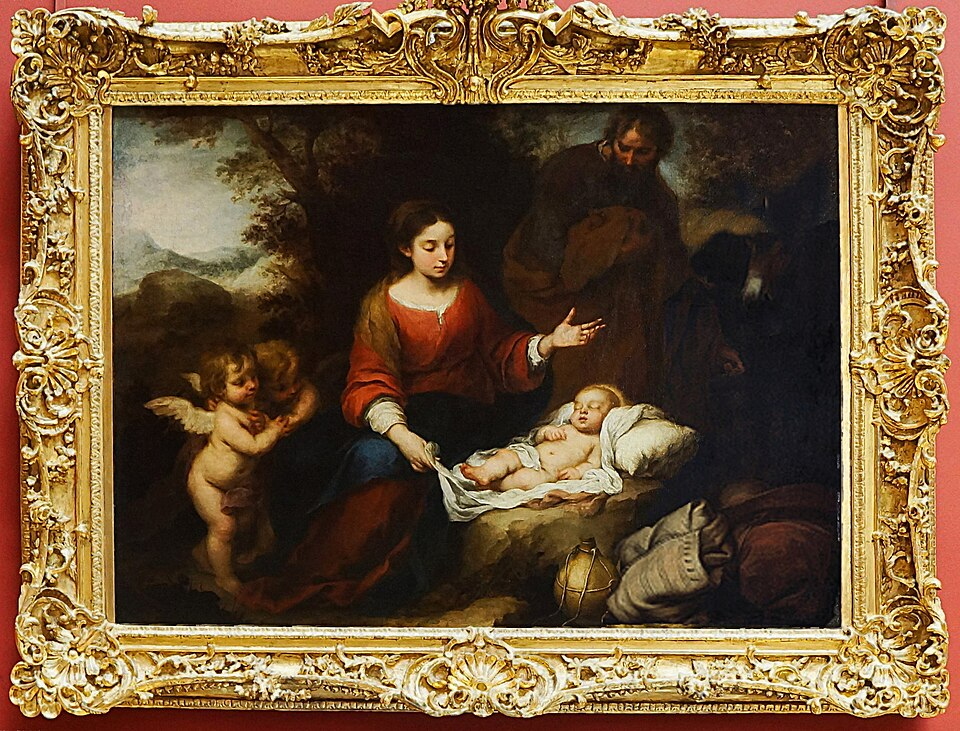
Die Heilige Familie auf der Flucht nach Ägypten (Gemälde von Murillo)
Die Vaterschaft des hl. Josef
Als der Himmlische Vater Seinen Sohn in die Welt sandte, um uns zu retten und uns zu Seinen Kindern zu machen, wählte Er den hl. Josef aus, um Seine göttliche Vaterschaft auf Erden zu repräsentieren. Das vollkommene Vertrauen, das Jesus Seinem Pflegevater entgegenbrachte, ist für uns alle ein leuchtendes Vorbild. Jesus liebte, gehorchte und ahmte Seinen irdischen Vater nach und jedes Mal, wenn Jesus den hl. Josef sah, ihn sprechen hörte, ihn arbeiten sah oder seine keusche Liebe zu Maria erlebte, erfuhr die Menschheit Jesu ein vollkommenes Spiegelbild des Vaters im Himmel.
Auch wir dürfen ihm unser ganzes Vertrauen schenken und uns als seine Kinder betrachten. Wenn Jesus nach den Plänen des Vaters, den hl. Josef brauchte, wie viel mehr brauchen auch wir ihn, diesen großen Schutzpatron der hl. Kirche. Wenn sich unsere Familienväter den hl. Josef zum Vorbild nehmen, dann wird dieser große Heilige ihnen helfen, ihre Vaterschaft ganz nach dem Herzen des Himmlischen Vaters zu leben.
So legen sie für ihre Kinder ein tragendes Lebensfundament, das für deren Zukunft zu einer Quelle göttlichen Segens wird.13
13 Vgl. Weihe an den hl. Josef von Donald H. Calloway, MIC, Kislegg 2021, S.36 Imprimatur: Most Rev. Jeffrey Monforton, DD Bischof von Steubenville, Ohio 22. Oktober 2019.
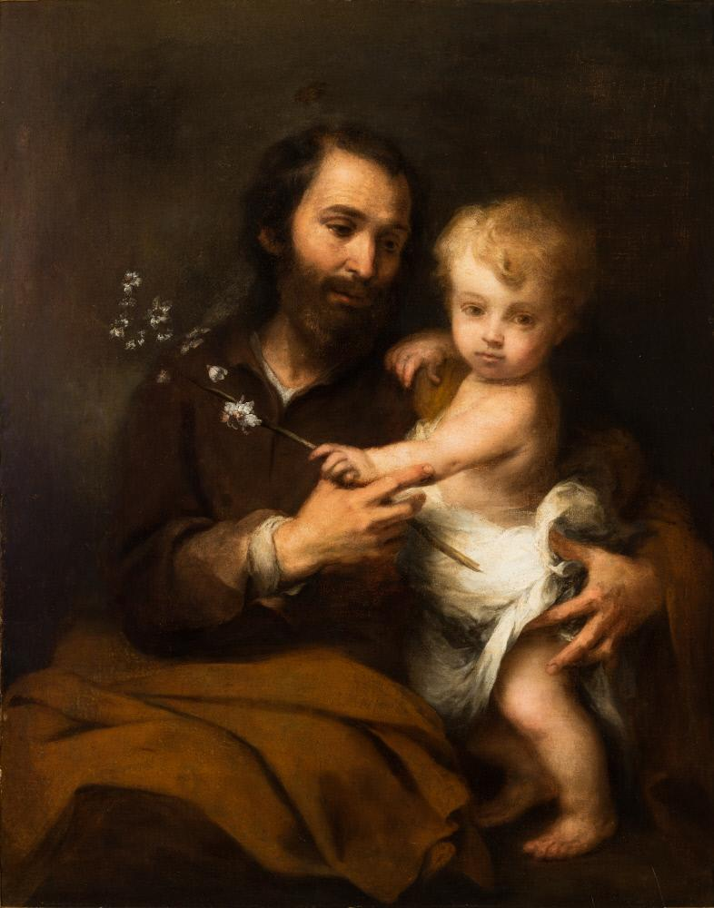
Hl. Josef mit dem Jesuskind
Gebet zum hl. Josef
Zu dir, o heiliger Josef, fliehen wir in unserer Not. Nachdem wir deine heilige Braut um Hilfe angefleht haben, bitten wir vertrauensvoll auch um deinen Schutz. Um der Liebe willen, die dich mit der unbefleckten Jungfrau und Gottesmutter verbunden hat, und um der väterlichen Liebe willen, mit der du das Jesuskind umarmt hast, bitten wir dich flehentlich: Schau gütig herab auf das kostbare Erbe, das Jesus Christus mit Seinem Blute erkauft hat, und komm unserer Not mit deiner Macht zu Hilfe. Fürsorglicher Beschützer der Heiligen Familie, wache über alle, die zu Kindern Gottes erwählt sind, halte fern von uns, liebreicher Vater, jeden Irrtum und jedes Laster. Steh uns, o starker Beschützer, vom Himmel aus gnädig bei im Kampf mit den Mächten der Finsternis. Und wie du einst das Jesuskind aus der höchsten Lebensgefahr errettet hast, so verteidige jetzt die heilige Kirche Gottes gegen ihre Feinde und Widersacher. Nimm uns alle unter deinen ständigen Schutz, damit wir nach deinem Beispiel und mit deiner Hilfe heilig leben, selig sterben und die ewige Seligkeit im Himmel erlangen. Amen. Papst Leo XIII.
Gebet und Lobpreis
Unser Gebet besitzt einen überragenden Wert und eine Kraft, die alle physischen Kräfte zusammengenommen himmelweit übersteigt. Die Körperwesen und die geschaffenen Geister mit all ihren Werken zusammen, bleiben um Sonnenweiten hinter der Kraft und dem Wert eines einzigen Aktes der Liebe zu Gott zurück und wiegen ihn nicht auf. Das Gebet aber hat die Kraft, uns die Gnade zu erlangen, mit der wir diesen Akt der Liebe vollziehen. Deshalb hat das christliche Gebet eine größere Bedeutung und Tragweite als die staunenswertesten Entdeckungen und die größten Talente. Es ist die Großmacht auf Erden. So müssen wir von unserem Gebet denken lernen.
Über den großen Wert eines einzigen Aktes der Liebe sprach Jesus zur heiligen Sr. M. Faustyna:
Meine Tochter, wenn du wüsstest, welch großen Verdienst und Preis ein reiner Akt der Liebe zu Mir hat, würdest du vor Freude sterben. Ich sage es deshalb, damit du dich unentwegt durch die Liebe mit Mir vereinigst, denn das ist das Lebensziel deiner Seele.14 Jesus zur hl. Sr. Faustyna Kowalska
14 Tagebuch der hl. Schwester Maria Faustyna Kowalska, Hauteville/Schweiz 2003, Nr. 576.
Gebet und Lobpreis sind die zwei Flügel, durch die unsere Seele in den Himmel fliegt.
Lobpreis erfüllt das Herz mit Freude und verleiht unserem ganzen Wesen einen Glanz. Es ist ein Geheimnis des gesegneten Lebens, dass Lobpreis nicht nur Segen hinzufügt, sondern auch jeden Segen Gottes vermehrt. Wenn du beginnst zu loben, verschwindet langsam die Unruhe aus deinem Herzen und die Furcht aus deiner Seele wie Nebel vor der Sonne. Wenn du anfängst zu loben, wird deine Sorge in Freude verwandelt und der Friede deiner Seele vermehrt. Wenn du anfängst zu loben, verstummt das Murren und die Kritik, der Odem des Himmels bläst die Wolken weg, und du fühlst dich wieder rein und neu.
Lobpreis stellt dem Teufel einen Hinterhalt und erhebt dich über die Anklagen Satans. Wenn du anfängst zu loben, wendet sich Satan mit Schrecken ab und flieht. Der Lobpreis bahnt dem Heiligen Geist den Weg in deinem Leben. Der Lobpreis verwandelt deine Berge der Schwierigkeiten in Hügel des Segens. Der Lobpreis Gottes erfüllt dich mit Freude und Frieden im Glauben. (Vgl. Röm 15,13)
Der Lobpreis verleiht dir Adlerflügel, und mit dem Glaubensauge siehst du schon den Sieg!
Die heiligen Engel Gottes, die immerfort das Antlitz des Himmlischen Vaters schauen und in aller Klarheit den Willen Gottes für unser Leben erkennen, eilen herbei um dir in der Erringung des Sieges behilflich zu sein.
Als Paulus und Silas beteten und Gott lobten, öffnete der Herr die Gefängnistüren zu Philippi. (Vgl. Apg 16,23-24)
Möchte jeder Tag ein Tag des Lobpreises werden. Beginne, gleich am Morgen, wenn du erwachst, den Herrn zu preisen. Jedes Mal, wenn du versucht wirst zu verzweifeln, dich zu fürchten, zu sorgen, zu kritisieren, irgendeiner Versuchung nachzugeben, fange an Gott zu preisen. Lobe den Herrn, meine Seele! Ich will den Herrn loben, solange ich lebe, und meinem Gott lobsingen, solange ich hier bin. (Ps 146,1-2)
Der Lobpreis ist eine Frucht der staunenden, dankenden und anbetenden Liebe zum Herrn. Daher können wir ohne diese Liebe, die uns durch den Heiligen Geist immer wieder neu geschenkt wird, nur schwerlich Gott loben. Wenn wir die heiligen Engel und Heiligen einladen, mit uns Gott zu lieben und zu loben, schenken sie uns Anteil an ihrer Herrlichkeit und erfüllen unser Leben mit der Atmosphäre des Himmels.15
15 Vgl. Die Macht des Lobpreises, Missionswerk „Stimme des Glaubens“, Konstanz 1972, S. 43-46.
Wie sehr uns der Lobpreis hilft von unserem eigenen kleinen Ich abzusehen und empfänglich zu werden für die Liebe Gottes, zeigt uns das folgende Beispiel aus dem Leben des hl. Franziskus von Assisi:
Nachdem dieser seraphische Heilige 1224 auf dem Berg La Verna die Wundmale Christi empfangen hatte, verfasste er seinen großen „Lobpreis an den Allerhöchsten.“
Dieser Lobpreis ist ganz auf das Du Gottes hingeordnet, denn Franziskus geht es nicht um sich, sondern allein um Gott. Er wird dabei nicht müde, Gott immer wieder mit Du anzusprechen. Du, Du bist, Du, nur Du! Du bist der allmächtige Vater, König des Himmels und der Erde!
Bruder Leo, sein Beichtvater und vertrautester Mitbruder, der mit ihm auf dem Berg weilte, quälten in dieser Zeit schwere Versuchungen. Durch seine Niedergeschlagenheit und dem Gefühl von Gott vernachlässigt zu sein, fiel er immer mehr auf sich selbst zurück und wurde immer bedrückter. Der hl. Franziskus erkannte seine Not und schrieb seinen „Lobpreis“ und einen speziellen Segen für Bruder Leo handschriftlich nieder und übergab ihm dieses kostbare Schriftstück mit den folgenden Worten: Nimm dieses Blatt an dich und bewahre es sorgfältig auf bis zum Tag deines Todes.
Da floh sogleich jede Spur jener Versuchung.
Das Schriftstück wurde aufbewahrt und wirkte in der Folgezeit Wunderbares.16
16 Vgl. „Bruder Leo, schreibe …“ Von Gottfried Egger OFM, St. Ottilien 2023, S. 88,96.
Gelobt seist Du, mein Herr, durch jene, die verzeihen um Deiner Liebe willen und Krankheit ertragen und Drangsal. Selig jene, die solches ertragen in Frieden, denn von Dir, o Höchster, werden sie gekrönt werden. Aus dem Sonnengesang des hl. Franziskus
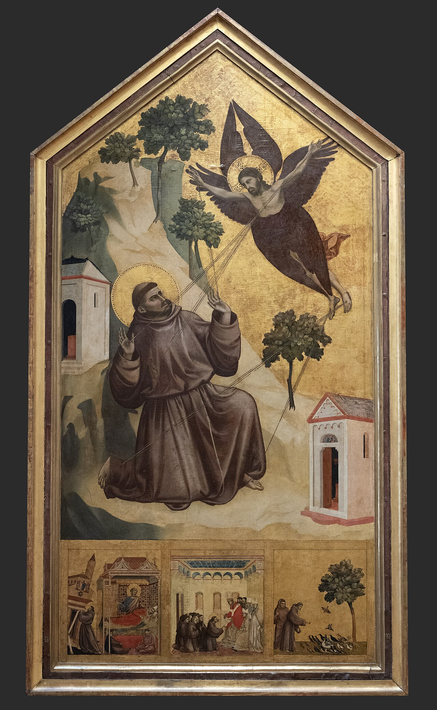
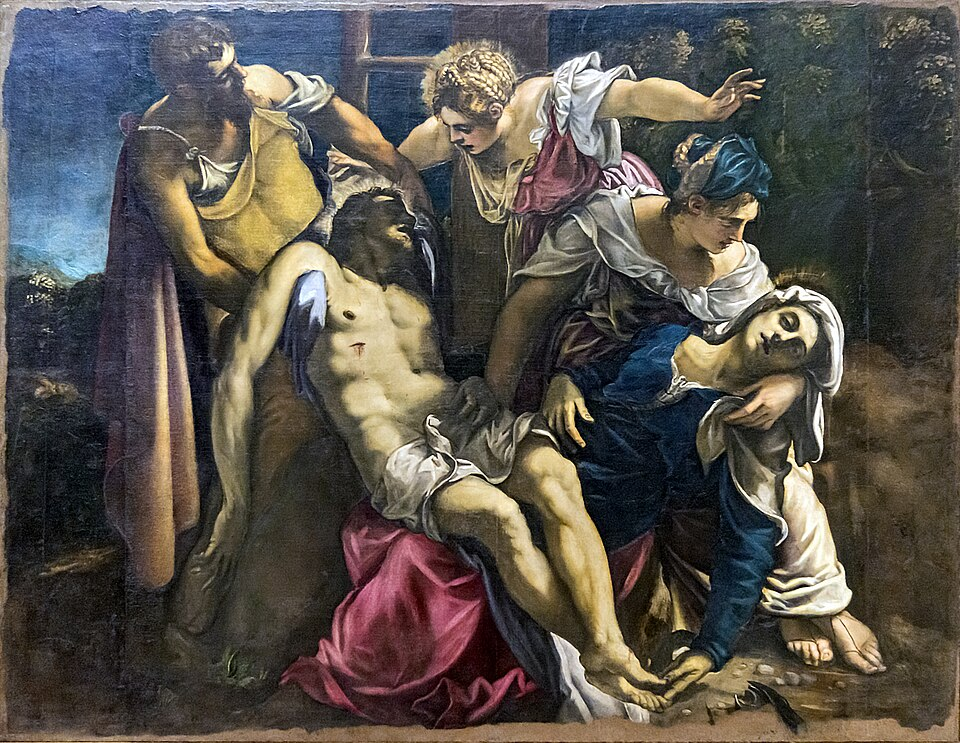
Kreuzabnahme Christi
Dankt dem Vater mit Freude!
Wenn uns der hl. Paulus aufruft, dem Vater im Himmel stets Dank zu sagen, so tut er dies, weil Er weiß, dass der aufrichtige Dank Gott höchst wohlgefällig ist und gleichzeitig unzählige neue geistige und leibliche Wohltaten auf die dankbare Seele herabzieht. Zur Dankbarkeit für alles, was uns der Himmlische Vater Tag für Tag schenkt, gesellt sich die Freude und die Zufriedenheit. Dankbarkeit, Freude und Zufriedenheit sind gleichsam „Schwestern“, die gerne gemeinsam durch dieses Leben gehen und bei Gott und den Menschen Gefallen finden. Selbst ein ganz von Sünden und Sorgen vergrämter Mensch kann diesen drei „Schwestern“ auf Dauer nicht widerstehen, wenn er ihnen auf seinem Weg begegnet, denn diese „Drei“ sind „ansteckend“.
Für alles Freudige und Schöne zu danken, fällt uns noch relativ leicht, doch wie steht es mit unserem Dank, wenn Gott uns durch Kreuz und Leiden prüft und unsere Gebetswünsche scheinbar nicht erhört?
Zur hl. Mirjam von Abellin, die von unzähligen Leiden und Verfolgungen heimgesucht wurde, sprach einst die Gottesmutter: Mirjam, sei mit deinem Los immer zufrieden, auch wenn du leiden musst. Der gütige Gott wird dir immer das Notwendige schicken.
Der hl. Ludwig Maria Grignion von Montfort sagt: Wer wird es jemals erklären, wer es fassen können, welch ewigen Schatz der Glorie ein einziger Augenblick eines willig ertragenen Kreuzes in uns wirkt?
Das Kreuz bleibt keinem Menschen auf dieser Welt erspart, denn das Kreuz ist die Brücke, die uns über den Abgrund dieser Welt zum Himmel führt.
Durch das Kreuz will Gott jene, die Ihn nicht lieben, an Sich ziehen, jene, die Ihn nicht genug lieben, näher zu Sich ziehen und jene, die Ihn lieben, ganz mit Sich vereinigen.
Wenn auch wir den Rat der Gottesmutter an die hl. Mirjam befolgen und immer zufrieden sind, indem wir zum Göttlichen Willen und all Seinen Zulassungen unser dankbares „Fiat“ sprechen, dann wird Gott alle Situationen unseres Lebens zum Guten führen. (Vgl. Röm 8,28)
Wir können uns nicht vorstellen, welch große Freude und Ehre wir dem Himmlischen Vater erweisen, wenn wir mit kindlichem Vertrauen unser Leben, Beten und Opfern Seiner gütigen Vatersorge übergeben.
Als die hl. Gertrud einmal die Frage an Jesus stellte, warum Er nicht alle Gebete erhöre, gab Er ihr die folgende Antwort: Geliebte Tochter, wenn Ich deine Gebete und Wünsche manchmal nicht erhöre, so geschieht es nur, um dir zur gegebenen Zeit noch mehr zu schenken. Du kannst in deiner menschlichen Schwachheit nicht erkennen, was für dich am vorteilhaftesten ist.
Wenn wir Gott in unserer menschlichen Kurzsichtigkeit um einen „Skorpion“ bitten, wird Er uns diesen Wunsch sicher nicht erfüllen, denn, Er wird uns nicht etwas geben, was uns zum Schaden gereicht. Doch wie es der katholische Glaube lehrt, dürfen wir ganz gewiss sein, dass jedes noch so kleinste Gebet von unserem Schutzengel zum Throne Gottes getragen wird und als Gnadenregen verwandelt auf uns und auf alle, für die wir beten, zurückfallen wird.
Sagt Gott, dem Vater, jederzeit Dank für alles im Namen Jesu Christi, unseres Herrn. Eph 5,20
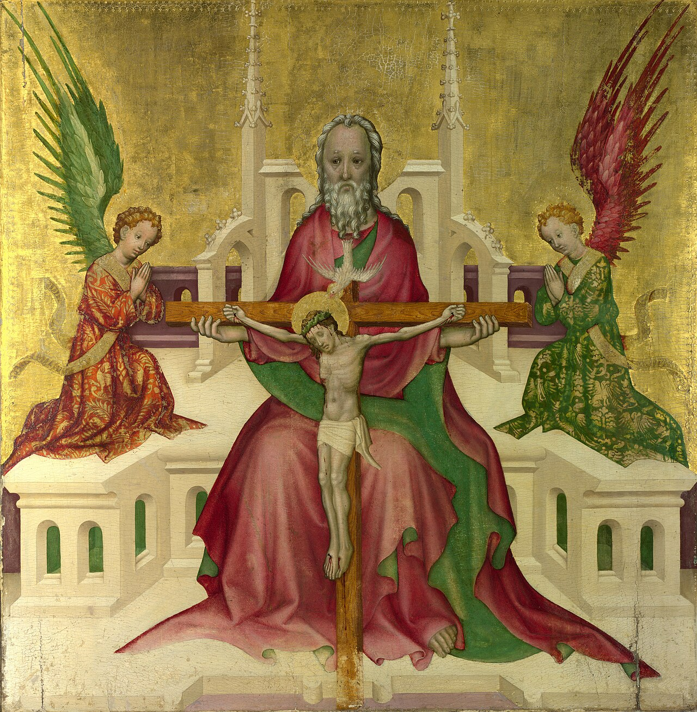
Der Himmlische Vater vor der Kreuzigung (Gnadenstuhl)
Gebete zum Himmlischen Vater
Mein Vater
Mein Vater, ich überlasse mich Dir. Mach mit mir, was Dir gefällt. Was Du auch mit mir tun magst, ich danke Dir. Zu allem bin ich bereit, alles nehme ich an, wenn nur Dein Wille sich an mir erfüllt und an all Deinen Geschöpfen; so ersehne ich weiter nichts, mein Gott. In Deine Hände lege ich meine Seele. Ich gebe sie Dir, mein Gott, mit der ganzen Liebe meines Herzens, weil ich Dich liebe und weil diese Liebe mich treibt, mich Dir hinzugeben, mich in Deine Hände zu legen ohne Maß, mit einem grenzenlosen Vertrauen, denn Du bist mein Vater. Hl. Charles de Foucauld
Göttlicher Vater
Göttlicher Vater, erfülle mich ganz mit Deiner Liebe! Lasse mich Dein fügsames Kind sein, an dem sich Dein väterlicher Plan verwirklichen kann. Mach mich gelehrig im Verstehen und im Annehmen aller Bekundungen Deiner Göttlichen Liebe. Amen. Mutter Eugenia E. Ravasio
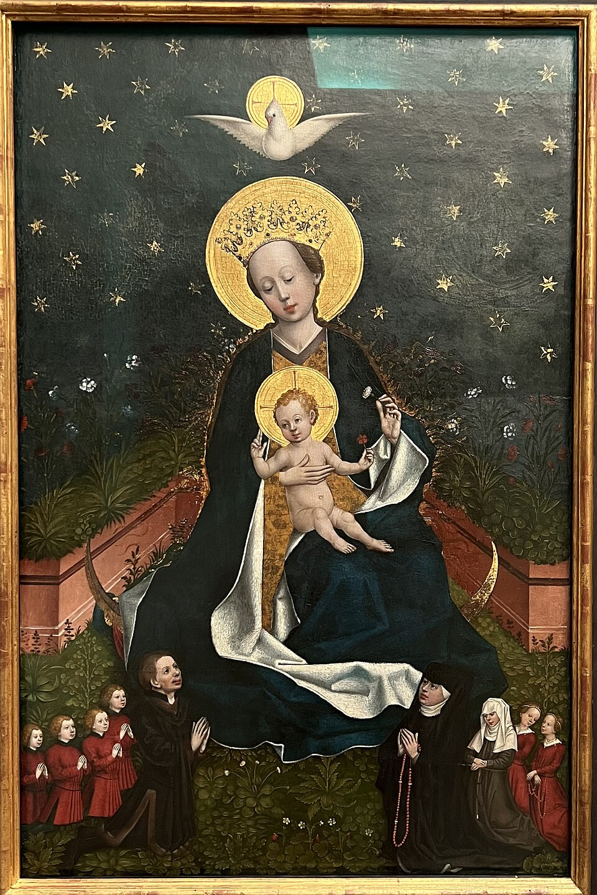
Maria mit dem Jesuskind im Sternenhimmel
Vaterunser-Novene
Vaterunser im Himmel!
Ich rufe zu Dir, Himmlischer Vater, erbarme Dich meiner und aller Menschen auf Erden, die guten Willens sind. Lass uns alle immer mehr erkennen, dass wir berufen sind, Dich in dieser Welt zu lieben, und Dir zu dienen, um einst an Deiner ewigen Herrlichkeit teilnehmen zu dürfen.
Geheiligt werde Dein Name!
Wie Dein Sohn Jesus wünsche ich sehnlich, dass Dein Name überall gepriesen und geehrt werde.
Dein Reich komme!
Möge Dein Reich immer mehr die ganze Menschheit erfassen: wachsen, blühen und reiche Frucht bringen in den Herzen Deiner Söhne und Töchter auf Erden.
Dein Wille geschehe, wie im Himmel, so auf Erden!
Lass die Menschen immer tiefer verstehen, dass der wahre Friede und das Glück allein in der vollkommenen Erfüllung Deines Willens, in der Beobachtung Deiner Gebote zu finden sind.
Unser tägliches Brot gib uns heute!
Vater der Erbarmung, schenke Deinen Kindern auf der ganzen Welt die nötige Speise für Seele und Leib. Lass uns immer mehr erkennen, wie heilbringend die täglich würdig empfangene Heilige Kommunion ist.
Und vergib uns unsere Schuld, wie auch wir vergeben unseren Schuldigern!
Gütiger Vater, ich opfere Dir zur Sühne für meine und aller Menschen Sünden, Gleichgültigkeiten und Fehler das Blut, die Wunden, Leiden und Verdienste Deines Sohnes Jesus auf. Nimm Seine große Liebe als Ersatz für unsere mangelhafte Gottes-, Nächsten- und Feindesliebe an.
Und führe uns nicht in Versuchung, sondern erlöse uns von dem Bösen!
Erbarmungsreicher Vater, halte fern den bösen Geist, die Welt und ihre List und die „nächste Gelegenheit“, damit ich und alle, die Dir lieb sind, in Deiner Gnade und in Deinem Frieden leben und Dir dienen dürfen. Sende Deine heiligen Engel auf die Fürsprache ihrer Königin uns zum Schutze und segne uns. Amen.17
17 Imprimatur: Erzbischöfliches Sekretariat Salzburg, 20.2.1985.
Vater, verherrliche Deinen Namen! Joh 12,28
Gott ist mein Vater
Mein Vater im Himmel, wie wohltuend und heilsam ist es für mich zu wissen: Du bist mein Vater, und ich bin Dein Kind.
Vor allem, wenn es in meiner Seele dunkel ist und mein Kreuz schwer wird, habe ich das Bedürfnis, Dir immer wieder zu sagen: „Vater, ich glaube an Deine Liebe zu mir.“
Ja, ich glaube, dass Du in jedem Augenblick meines Lebens Vater bist und dass ich Dein Kind bin. (…)
Ich glaube! Doch stärke in mir den Glauben, die Hoffnung und die Liebe. Lehre mich, in allen Ereignissen meines Lebens immer Deine Liebe als Führerin zu sehen. Lehre mich, wie ein Kind in den Armen seiner Mutter mich Dir ganz zu überlassen. Vater, Du weißt alles, und Du siehst alles. Du kennst mich besser, als ich mich selbst kenne. Du vermagst alles und Du liebst mich.
Mein Vater, weil Du willst, dass wir vertrauensvoll zu Dir kommen, so komme ich, um Dich mit Jesus und Maria zu bitten … Vereint mit ihren Heiligsten Herzen bringe ich Dir in diesem Anliegen alle meine Gebete, Opfer und Verzichte dar, all mein Handeln und eine größere Treue in der Erfüllung meiner Pflichten.18 Schenke mir das Licht, die Kraft und die Gnade des Heiligen Geistes. Stärke mich in diesem Geist, sodass ich ihn nie verliere und ihn weder betrübe noch in mir schwäche. (…)
Göttlicher Vater, liebreiche Hoffnung unserer Seelen, mögest Du von allen Menschen erkannt, geehrt und geliebt werden.
Göttlicher Vater, unendliche Güte, die sich über alle Völker ergießt, mögest Du von allen Menschen erkannt, geehrt und geliebt werden.
Göttlicher Vater, belebender Tau der Menschheit, mögest Du von allen Menschen erkannt, geehrt und geliebt werden. Amen.19
Mutter Eugenia E. Ravasio
18 Betet man dieses Gebet als Novene, so sollte hinzugefügt werden: „Ich verspreche Dir, besonders während dieser neun Tage bei einer bestimmten Gelegenheit … bzw. gegenüber einer bestimmten Person … großherziger zu sein.“
19 Imprimatur: Jean Kard. Verdier, Erzbischof von Paris, 8. Mai 1936. Der Vater gewährt viele Gnaden auf die Fürbitte von Mutter Eugenia durch das Gebet Gott ist mein Vater, das Er ihr selbst gegeben hat, besonders für die Familien, für jedwelche Notlage der Familien. Mutter Eugenia sagte, dass nur schon der Titel des Gebets Gott ist mein Vater ein volles Gebet ist. Sie empfahl uns, oft untertags zu wiederholen: Gott ist mein Vater, denn sie betonte, dass der Vater sehr zufrieden und erfreut ist über Sein Kind, das Ihn liebevoll Mein Vater nennt.
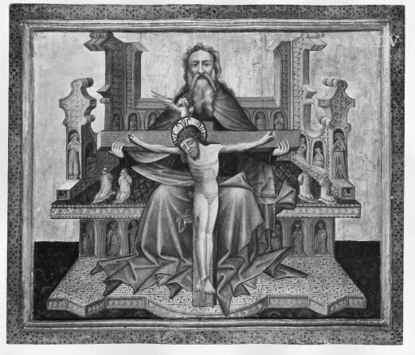
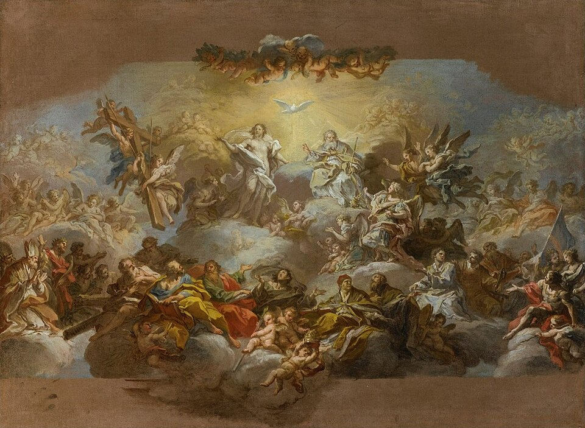
Die Heiligste Dreifaltigkeit, umgeben von Heiligen (Skizze von Sebastiano Conca)
Heilungsgebet
Vater, ich lobe und preise Deine Güte und Deine Liebe. Ich bitte Dich im Namen Jesu, Deines vielgeliebten Sohnes, dass Du mir Deinen Heiligen Geist sendest mit allen seinen Früchten und Gaben.
Heilige mit Deiner Gegenwart meinen Leib und meine Seele. Gewähre mir einen starken Glauben an Dich und an Dein Wort.
Gib mir die Gnade, Dich von ganzem Herzen zu lieben und Dich in meinem Leben an den ersten Platz zu stellen, indem ich allen meinen Götzen, Süchten, Sünden und Anhänglichkeiten entsage.
In Deiner unendlichen Barmherzigkeit habe Erbarmen mit mir armen Sünder und vergib mir meine Schuld.
Auch ich verzeihe allen von ganzem Herzen, die mich in meinem Leben beleidigt haben (N.N.).
Befreie mich von allen Hinterhalten und Angriffen des bösen Feindes. Er möge keine Macht über mich haben. Befreie mich von allen Verführungen der Welt, die mich von Dir und Deinem Willen wegführen. Befreie mich von allen Schwächen des Fleisches, die mich zur Sünde drängen.
Heile meinen Leib von allen Krankheiten und meinen Geist von aller Not, Traurigkeit und Verwirrung. Du weißt, was ich seit dem Tag meiner Empfängnis im Schoß meiner Mutter Negatives erfahren habe.
Heiliger Vater, mit der Gnade des Heiligen Geistes heile mein Herz von allen Verwundungen, vor allem von jenen, die von Ablehnung, Einsamkeit, mangelnder Liebe, Hass, Neid, Gleichgültigkeit oder Bosheit der Menschen herrühren.
Gib mir ein neues Herz, ähnlich dem Herzen Jesu, sanftmütig und demütig, voller Freude und Frieden und überfließend von Liebe.
Heute möchte ich ein neues Leben beginnen und Dir in allem die Ehre geben, in allem was ich denke, rede und unternehme. Auf dieser Pilgerschaft zu Dir möchte ich von Maria, meiner lieben Mutter, begleitet werden und von allen Deinen Engeln und Heiligen. Amen. Pe. Sousa-Lara, Gebet der Kapuzinerinnen von der Ewigen Anbetung
Erschaffe mir, Gott ein reines Herz und gib mir einen neuen, beständigen Geist! Ps 51,12
Vater, lieber guter Vater
Vater, lieber guter Vater,
innig flehe ich zu Dir:
Du mein Gott und Du mein Alles,
neige Dich herab zu mir!
Nicht in Worte kann ich fassen,
was erfüllt mein ganzes Sein.
Schau und lies in meinem Herzen,
was Du selber schriebst hinein!
Schau, wie ich so heiß mich sehne,
Dich zu lieben tief und treu.
Eine Sorge nur zu kennen,
dass mein Wandel Dich erfreu!
Dass ich Deinen heil'gen Willen
klar erkenne allezeit,
und ihn freudig zu erfüllen,
sei von Herzen stets bereit!
Vater, neige Dich hernieder,
schau, wie ich mit Kindessinn,
meines Wesens tiefster Tiefen,
betend breite vor Dich hin!
Dass Dein Reich sich hier entfalte,
Friede werde unsrer Zeit,
und dass Deine Priester spiegeln
Christi Lieb und Heiligkeit!
O, wie möcht für Deine Ehre
glühen und verzehren mich,
dass die Menschenkinder alle,
Deiner Liebe öffnen sich!
Vater, lieber guter Vater,
neig Dich von des Himmelshöhn.
Hör aus meines Herzens Sehnen,
Deiner eignen Liebe Flehn!
Schau, wie ich so oft noch fehle,
wie ich ringe, Tag um Tag,
und die Treu, die heiß ersehnte,
doch mir nicht gelingen mag!
Komm zu Hilfe Deinem Kinde,
gib mir, was Du willst von mir!
Gib es mir um Jesu willen,
durch Maria fleh zu Dir!
Schau, wie ich so gerne möchte,
bei Dir recht in Gnaden stehn,
dass ich Deiner Segensfülle
allen Menschen könnt erflehn!
Hast Dein Wollen mir gegeben,
wirk nun das Vollbringen auch.
Lass mich glühn in Lieb und Sehnen
bis zum letzten Lebenshauch!
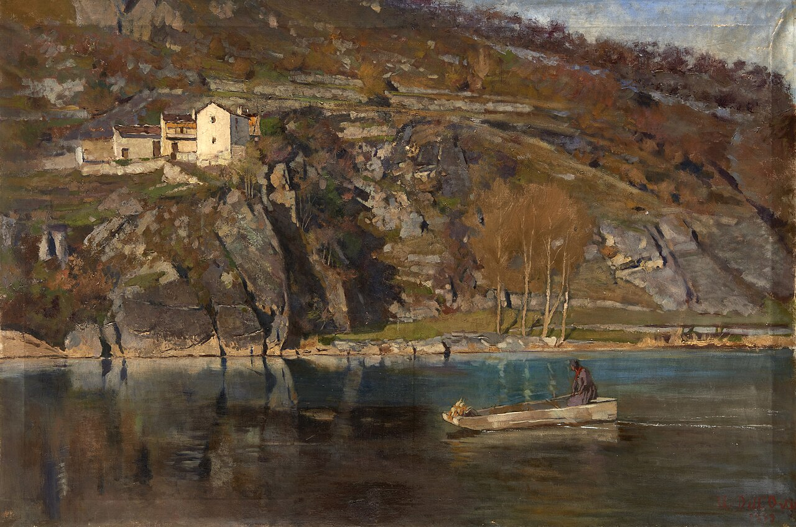
Schau, wie das Wasser der Adda kommt und weiterfließt … Bliebe es stehen, entstünde ein fauliger Tümpel. So ist es auch mit deinen Leiden, Tränen und Kämpfen: Sie kommen und gehen. Gib gut acht, dass du sie nicht festhältst. Alles vergeht. Gib alles Gott hin … Schau nicht auf die Person, die dir ein Leid zufügt, sondern nimm es aus Seiner Hand an. Nichts geschieht zufällig. Gott begleitet Seine Geschöpfe Schritt für Schritt. Er meint es ganz gewiss gut mit uns, auch wenn wir nicht jedes Warum verstehen. Lass dich nicht entmutigen, geh immer vorwärts und warte, bis das Leid vorübergeht. Aus den Unterweisungen, die Mutter Eugenia als Kind von ihrem tiefgläubigen Großvater empfing
Ihr habt nicht einen Geist empfangen, der euch zu Sklaven macht, sodass ihr euch immer noch fürchten müsstet, sondern ihr habt den Geist empfangen, der euch zu Söhnen macht, der Geist, in dem wir rufen: Abba, Vater! Römer 8,15